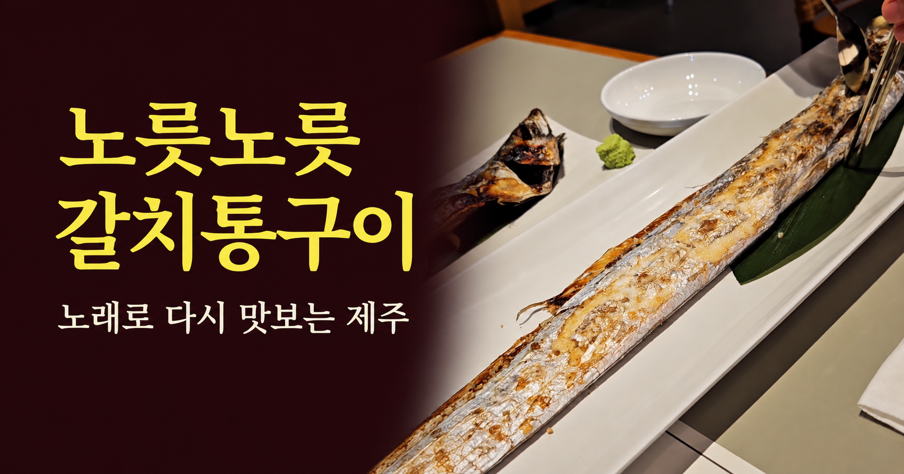

MUSIC · IMAGE CINEMA · WEBTOON
노릇노릇 갈치통구이
제주 서귀포 중문 노릇에서 맛본 갈치통구이와 갈치솥밥.미리내맨의 실제 방문 사진·영상,노래와 웹툰,이미지 시네마로 한 끼의 기억을 만나고 지도에서 위치를 확인하세요.
노래 원작 · 미리내맨

제주 노릇에서 시작된 한 끼의 기록
제주 서귀포 중문의 노릇에서 긴 갈치통구이를 마주했습니다.바삭한 껍질과 부드러운 속살,걱정과 달리 고소했던 갈치솥밥의 기억을 노래와 웹툰,이미지 시네마로 담았습니다.
제주 노릇에서 마주한 긴 갈치통구이.한 접시에 다 담기지 않는 크기에 놀라고 바삭한 껍질 속 하얀 살에 다시 놀란 저녁을 노래로 담았습니다.
뚜껑을 열기 전까지 걱정했던 갈치솥밥은 한 숟갈 뒤 다른 기억이 됩니다.마지막 누룽지와 빈 접시까지 한 끼의 여운이 이어집니다.
노래와 웹툰, 이미지 시네마
Mirinaeman의 원곡 전체에 새로 그린 수채화 원화 9장을 엮은 약 4분 9초의 이미지 시네마입니다.별도 한국어 가사 자막을 켜고 끌 수 있습니다.
웹툰 8장은 읽는 사람의 속도로 이어집니다.감상 페이지에는 실제 방문 영상과 사진, 노래와 가사도 함께 있습니다.
미리내맨의 개인 방문 경험에서 출발한 창작물입니다.사진과 실제 방문 영상은 그날의 식사를 기록하고,웹툰과 이미지 시네마는 그 기억을 새롭게 표현합니다.
노릇 찾아가기
중문갈치노릇 서귀포중문점 · 제주 서귀포 중문
방문 전 위치와 최신 영업시간·메뉴는 지도에서 확인해 주세요.